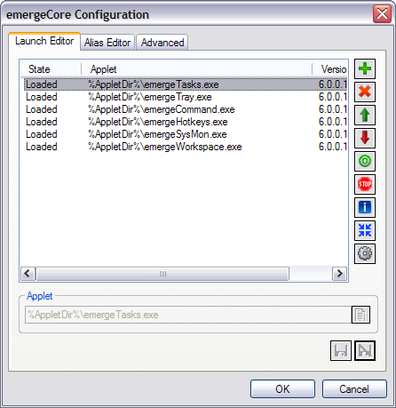
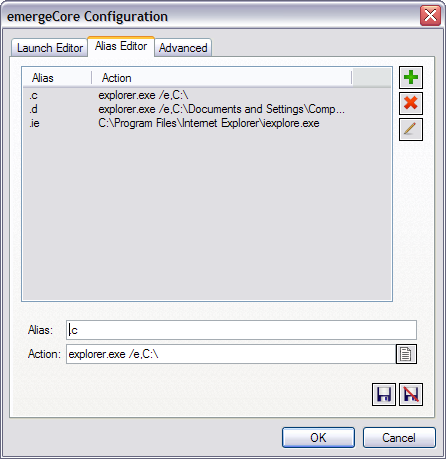
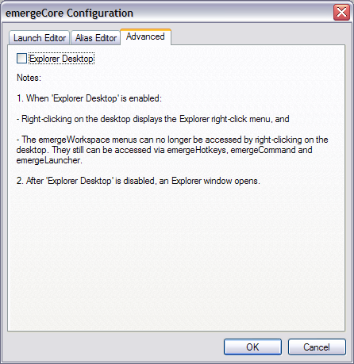

| About |
emergeCore, as the name indicates, is the core component of Emerge Desktop. It is the messaging interface between all the other Emerge Desktop applets.
It also launches the startup programs and the Microsoft DDE Server.
| Configuration |
The main components of Emerge Desktop that are dependent on emergeCore are:
To display the emergeCore configuration dialog box, the user must right-click on the desktop, select Settings, and Configure Core. The first tab is Launch Editor:

(alternatively the user can type LaunchEditor in the emergeCommand command window)
To Add  a new applet to emergeCore, the user must Browse
a new applet to emergeCore, the user must Browse  to the applet's executable, Save
to the applet's executable, Save  the item (or
Discard
the item (or
Discard  to start over), highlight it in the Applet list, and Start
to start over), highlight it in the Applet list, and Start  , which switches the applet's State from Unloaded to Loaded (i.e. executes the applet).
, which switches the applet's State from Unloaded to Loaded (i.e. executes the applet).
To stop an applet (i.e. go from Loaded to Unloaded state), the user must highlight it in the Applet list and click on Stop  .
.
To delete an applet (which only removes it from the Applet list), the user must click on Delete  .
.
The Up  and Down
and Down  buttons are used to change the loading order of the applets.
buttons are used to change the loading order of the applets.
The Info  button displays the highlighted applet's name, version and authors.
button displays the highlighted applet's name, version and authors.
The Gather  button moves the highlighted applet's window (if it has one) next to the Launch Applets dialog box for when it can't be located on the desktop.
button moves the highlighted applet's window (if it has one) next to the Launch Applets dialog box for when it can't be located on the desktop.
The Configure Applet button allows the configuration of the highlighted applet in the same way as Ctrl-right-clicking that applet's window.
Pressing the OK button saves the current settings and closes the configuration dialog box.
After the user adds, deletes or modifies incorrectly an item, she can undo changes by clicking the Cancel button. A dialog box will open asking for confirmation to close the configuration dialog box without saving the changes made.
The second tab is the Alias Editor:

(alternatively the user can type AliasEditor in the emergeCommand command window)
The Alias Editor allows to create aliases, which are shortcuts for executables or Internal Commands. To Add  a new Alias, the user must type in the Alias window a shortcut letter(s) preceded by a period (.), then Browse
a new Alias, the user must type in the Alias window a shortcut letter(s) preceded by a period (.), then Browse  and select an executable, or type in the Action window an internal command, and Save
and select an executable, or type in the Action window an internal command, and Save  it (or
Discard
it (or
Discard  it to start over). An existing alias can be Edited
it to start over). An existing alias can be Edited  or Deleted
or Deleted  after highlighting it.
after highlighting it.
The third tab is Advanced:

(alternatively the user can type CoreSettings in the emergeCommand command window)
A check mark in the Explorer Desktop box changes the desktop functionality to that of Explorer. Per the notes underneath the box, the user should first make sure that he has a ready access to the Emerge Desktop menu prior to change to Explorer Desktop, since right-clicking the desktop will no longer start the menu.
To display the Desktop Shell dialog box, the user must right-click on the desktop, select Settings, and Change Desktop Shell:

(alternatively the user can click on "Emerge Desktop Shell Changer" in the Emerge Desktop program group in the Start menu (which can be accessed both when Windows Explorer or Emerge Desktop is the shell). Also, the user can type ShellChanger in the emergeCommand command window.)
Emerge Desktop and Windows Explorer are listed in the Shell drop list (and cannot be removed from it).
The user can Add  other shells to the list by Browsing
other shells to the list by Browsing  to the file, defining a Name, and then clicking on Save
to the file, defining a Name, and then clicking on Save  to save the item (or Discard
to save the item (or Discard  to start over).
to start over).
An added shell can be modified or deleted by selecting it from the drop list and pressing the Modify  or Delete
or Delete  button.
button.
If Show Startup Errors is checked, missing startup items generate an error message.
To switch from one shell to another, the user must select a new shell from the drop list, and click on the OK button. After rebooting or loging off and back on, Windows will load the new shell.
| Usage |
Like in Explorer, pressing the Shift key at logon will prevent loading all items in both the Common and User Startup Groups. However, emergeCore goes two steps further: pressing the Ctrl key prevents loading both the Local Machine and Current User Run registry keys, and pressing simultaneously the Shift and Ctrl keys will skip all startup items.
emergeCore supports the following Command line switches:
The user can type in the Run box or emergeCommand window: "C:\Program Files\Emerge Desktop\emergeCore.exe" /shellchanger (with the quotes marks if the path to emergeCore has spaces)
To execute an alias, the user enters its shortcut (e.g. ".e" for Internet Explorer) in the emergeCommand window.